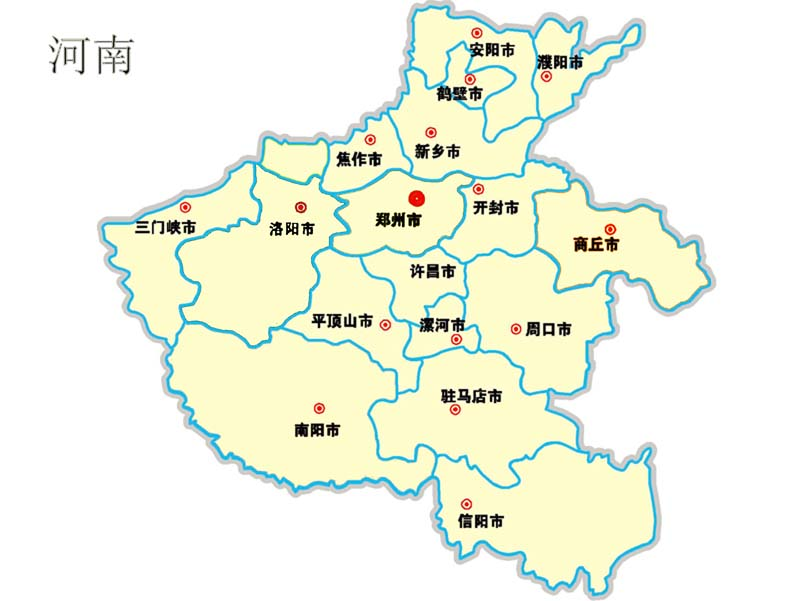
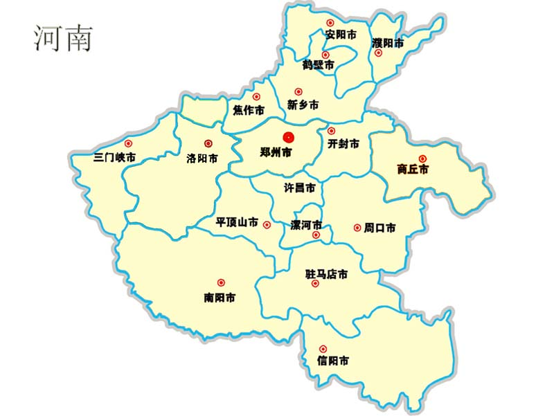

我的家乡


 

它是嵩山时代的河洛古国、夏朝遗址，是太行山时代的殷墟，是大秦岭时代的洛阳，是大平原时代的开封……一部河南史，半部中国史。造山造水造中华，文化根脉，华夏起源，这里是河南。
我的家乡--河南，古称中原、豫州、中州，简称“豫”，因大部分位于黄河以南，故名河南。
河南是中华民族与中华文明的主要发祥地之一，中国古代四大发明中的指南针、造纸、火药三大技术均发明于河南。 历史上先后有20多个朝代建都或迁都河南，诞生了洛阳、开封、安阳、郑州、商丘等古都，为中国古都数量最多最密集的省区。河南有老子、庄子、墨子、韩非子、商鞅、张良、张衡、杜甫、吴道子、岳飞等历史名人。
郑州商品交易所是中国首家内陆唯一一家期货交易所。郑州航空港区为中国唯一一个国家级航空港经济实验区。中国（河南）自由贸易试验区为中国新设立的自贸区。2016年12月，国家批复郑州入选国家中心城市。 以河南为主体的中原城市群为中国经济第四增长极。 河南文物古迹众多，旅游资源丰富。截至2017年，河南有世界文化遗产6项25处，全国重点文物保护单位358处，国家AAAAA级旅游景区13处。 这是我家河南--景区、古代建筑、当地美食数不胜数，记得有个老外播主现在还没有吃出河南，扬言要多时间吃遍全中国的美食，可惜现在还没有吃出河南，只能说一句加油！等着你。 作家李乃庆曾经赋诗赞道 ：“一陵一湖一古城，二老三皇享盛名，四冢五墓六公祠，七台八景湖中映。”更是有“得中原者得天下”这是引以为傲的。作为河南人爱自己的家乡，爱生我养我的地方，爱自己家乡的文化，传播发扬。引以为傲，做本地代表者，做一个强河南人。